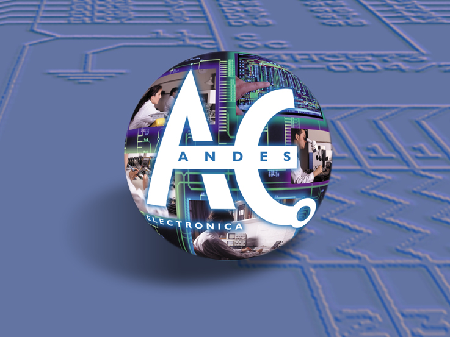

Hardware y firmware propios para transporte, minería, defensa y telecomunicaciones. No revendemos equipos: diseñamos cada circuito, escribimos cada línea de firmware y damos soporte directo con ingenieros en Chile.
Entregar ingeniería confiable, con respuesta local, a operaciones críticas en Chile. Hardware nuestro, firmware nuestro, soporte aquí.
Enrique Morchio y Cía. Ltda., bajo el nombre de Andes Electrónica, inició sus actividades el 1° de diciembre de 1991, cubriendo Desarrollo e Investigación en Electrónica, diseño de circuitos electrónicos, servicios de instalación y mantenimiento de equipos, y fabricación de soluciones electrónicas.
Andes Electrónica se formó como empresa de servicios, especializada en soluciones tecnológicas tanto para productos de clientes como para desarrollos propios — Sistemas Fiscales y Tacógrafos Electrónicos. Actualmente posee el equipamiento para actividades de I+D en minería, transporte, retail, defensa, universidades, entre otros, y desarrolla fabricación de equipos electrónicos, diseño de circuitos, soporte técnico, asesorías, sistemas de control automático y reingeniería, además de instalación y puesta en marcha de centrales de telefonía fija, móvil y equipos wireless.

Enrique Morchio y Cía. Ltda., bajo el nombre de Andes Electrónica, inicia sus actividades el 1° de diciembre de 1991. Cubre Desarrollo e Investigación en Electrónica, diseño de circuitos, servicios de instalación y mantenimiento, y fabricación de soluciones electrónicas.
La autoridad establece el marco regulatorio para el control electrónico de jornada en transporte de carga y pasajeros. Andes Electrónica desarrolla equipos y sistemas que cumplen estas normativas.
Se complementa el marco normativo para sistemas de control de jornada de transporte público y carga. Andes Electrónica adapta sus equipos al nuevo marco.
El 2 de febrero de 2009 la Dirección del Trabajo certifica a Andes Electrónica como operador del Sistema Automatizado de Control de Asistencia y Locomoción. Nace formalmente la plataforma SACEL.
Turbus SpA adopta el Sistema SACEL como referente del control de jornada y telemetría de flota. Marca el inicio del despliegue del sistema en operadores interurbanos de mayor escala.
Seguimos siendo una empresa de ingeniería — no un distribuidor. Diseñamos, fabricamos y damos soporte a nuestros productos. Atendemos transporte, minería, defensa, telecomunicaciones, retail y universidades con monitoreo de flotas a nivel nacional.
Hemos construido capacidades específicas para cada sector — desde la normativa del transporte público hasta los protocolos de comunicación industriales de la minería.
Tacógrafos, SACEL y telemetría para flotas de buses y camiones.
Electrónica especializada y reingeniería de equipamiento industrial.
Hardware dedicado, sistemas legacy y mantención de electrónica especializada.
Instalación y puesta en marcha de centrales fija, móvil y equipos wireless.
Sistemas de control y automatización para operaciones comerciales.
Proyectos académicos, prototipado y desarrollo a medida.
Un equipo integrado de ingenieros electrónicos, firmware, backend y soporte técnico que cubre el ciclo completo — desde el diseño del PCB hasta la operación en terreno de flotas con miles de vehículos.
PCBs de alta densidad, ruteo mixto analógico/digital, simulación y validación por ciclos térmicos y EMI.
Producción de series unitarias e industriales. Programación de firmware en planta, pruebas funcionales completas.
Firmware embebido en C / C++, plataformas web con Node y bases de datos relacionales. Uplink 4G con cifrado.
Red propia de instaladores y técnicos de servicio en regiones. Atención presencial, visitas programadas y de emergencia.
Acompañamiento en procesos de certificación DT, ISO y sectoriales. Operador autorizado para normativas de transporte.
Proyectos a medida para industria, minería y defensa. Reingeniería y electrónica especializada de baja escala.
Visita, conversación directa, propuesta técnica escrita. Así trabajamos.